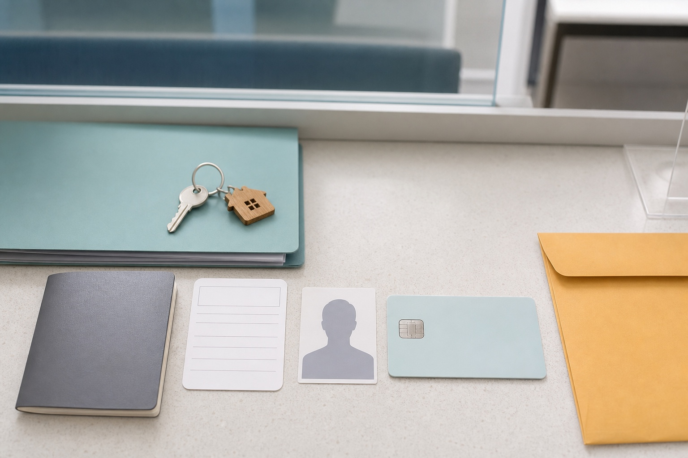
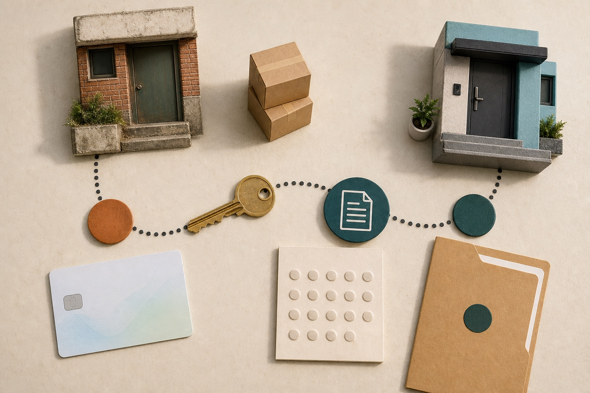

<style>
.keg-post{color:#172033;font:17px/1.72 Arial,Helvetica,sans-serif;max-width:860px;margin:0 auto}.keg-post *{box-sizing:border-box}.keg-post h1{font-size:34px;line-height:1.18;margin:0 0 18px}.keg-post h2{font-size:25px;line-height:1.25;margin:38px 0 14px;padding-top:8px;border-top:1px solid #d9e3ea}.keg-post h3{font-size:20px;line-height:1.35;margin:22px 0 8px}.keg-post p{margin:0 0 18px}.keg-post a{color:#2563eb;font-weight:700;text-decoration:none;border-bottom:1px solid rgba(37,99,235,.3)}.keg-post figure{margin:0 0 28px;overflow:hidden;border:1px solid #d9e3ea;border-radius:16px;background:#f8fbfd}.keg-post img{display:block;width:100%;height:auto}.keg-post figcaption{padding:10px 14px;color:#526173;font-size:14px}.keg-post__lead{padding:18px 20px;border-left:5px solid #0f766e;background:#eefaf7}.keg-post__note{padding:16px 18px;border-left:5px solid #b45309;background:#fff8e8}.keg-post table{width:100%;margin:14px 0 26px;border-collapse:collapse;border:1px solid #d9e3ea}.keg-post th,.keg-post td{padding:13px 15px;border-bottom:1px solid #d9e3ea;text-align:left;vertical-align:top}.keg-post th{background:#eaf3ff}.keg-post ol,.keg-post ul{margin:0 0 24px;padding-left:24px}.keg-post li{margin:0 0 12px}@media(max-width:640px){.keg-post{font-size:16px}.keg-post h1{font-size:29px}.keg-post h2{font-size:22px}.keg-post table{display:block;overflow-x:auto}}
</style>
<article class="keg-post">
<h1>Korea Residence Card (Formerly ARC): A First-Time Foreigner’s Guide</h1>
<figure></figure>
<p class="keg-post__lead">If you will live in Korea for more than 90 days, treat residence registration as an early arrival task—not something to leave until your visa’s last week. The Ministry of Justice says a foreign national intending to stay more than 90 days must register within 90 days of entry. Start by reserving a visit on HiKorea, confirm the immigration office that covers your Korean address, and prepare the documents for your exact visa. The physical ID is now commonly called a <strong>Residence Card</strong>; many banks, schools, employers, and older English guides still call it an Alien Registration Card or ARC.</p>
<p><strong>Last checked:</strong> August 5, 2026. Immigration requirements depend on visa type and personal circumstances. Use this article as a preparation checklist, then confirm your case through HiKorea or the multilingual 1345 Immigration Contact Center before submitting or paying.</p>

<h2 data-section="decision">Quick Answer: What Should You Do First?</h2>
<table>
<tr><th>Your situation</th><th>Best next move</th><th>Why</th></tr>
<tr><td>You have just arrived on a long-term visa</td><td>Secure a usable Korean address, then reserve the correct immigration office on HiKorea</td><td>The office is based on jurisdiction, and appointment availability can be tighter than expected.</td></tr>
<tr><td>Your university or employer runs group registration</td><td>Follow its deadline and document list, but verify what the group service actually submits</td><td>A campus or company process can save a visit, yet you remain responsible for missing documents and later changes.</td></tr>
<tr><td>You will leave Korea within 90 days</td><td>Do not assume you need a Residence Card</td><td>The general registration rule applies to people intending to stay more than 90 days; your status or later extension can change the answer.</td></tr>
<tr><td>You moved after applying or after receiving the card</td><td>Report the new place of residence promptly through an accepted channel</td><td>A normal Korean household move-in report does not automatically update a foreign spouse or housemate.</td></tr>
<tr><td>You need mobile ID</td><td>First obtain the physical card and check phone eligibility</td><td>The Mobile Residence Card requires a supported smartphone registered in your name and has separate setup rules.</td></tr>
</table>

<h2 data-section="orientation">ARC, Foreigner Registration Card, and Residence Card: Are They Different?</h2>
<p>In everyday English, people often use “ARC” for the plastic card issued after foreigner registration. Official English pages increasingly use “Foreign Residence Card” or “Residence Card,” while some older pages and Korean service desks still use “Alien Registration Card” or “Foreigner Registration Card.” For a first application, these phrases usually point to the same basic foreigner-registration process, not three different applications.</p>
<p>Do not confuse this card with your visa. A visa supports entry; your status of stay and permitted period govern what you may do in Korea; the Residence Card is an official identity card issued after the required registration. Receiving a card does not expand your work rights, extend your stay, or authorize part-time work that your status does not permit.</p>
<p>The Ministry of Justice describes the card as an official ID with legal identity-document effect. In practice, it supplies the registration number frequently requested for a Korean phone plan, bank compliance checks, employment administration, hospital records, and online identity verification. A business can still ask for additional documents, and some online services may not support every foreign name or status.</p>

<h2>Who Normally Needs to Register, and When?</h2>
<p>The clearest official rule is duration-based: a foreign national who intends to stay in Korea for more than 90 days must complete foreigner registration within 90 days after entry. If Korea grants or changes your status while you are already in the country, the applicable filing point can differ, so use the date and instruction on your approval notice rather than guessing from the general rule.</p>
<p>Students, language trainees, employees, researchers, dependents, investors, and family-status holders commonly need registration when their authorized stay exceeds 90 days. Short-stay tourists normally do not apply merely to obtain Korean app access. Overseas Koreans, permanent residents, diplomats, military-status holders, and other special categories may use different cards, exemptions, or procedures.</p>
<p class="keg-post__note"><strong>Do not wait for day 89.</strong> A HiKorea reservation is only an appointment; it is not completed registration. Reserve early enough to collect a missing school, employer, housing, or visa-specific document. If no reasonable appointment is available before your deadline, call 1345 and ask for the correct official instruction for your jurisdiction.</p>

<h2 data-section="steps">Step-by-Step: From Arrival to Physical Card</h2>
<ol>
<li><strong>Confirm your deadline and visa-specific list.</strong> Open HiKorea and check the current guidance for foreigner registration under your status. A D-2 student, E-2 teacher, F-6 spouse, and dependent can be asked for different supporting records.</li>
<li><strong>Establish proof of your Korean residence.</strong> A signed lease is straightforward when your name appears on it. Dormitory residents, hotel or goshiwon residents, and people living with a friend or family member may need an accommodation confirmation plus the host’s or property holder’s supporting documents. Ask 1345 what combination applies before the appointment.</li>
<li><strong>Find the office with jurisdiction.</strong> Immigration offices divide cases by place of residence. A nearer building is not necessarily allowed to process your case. HiKorea and 1345 can identify the correct office or branch.</li>
<li><strong>Reserve the visit on HiKorea.</strong> Choose the service, office, applicant, date, and time carefully. Save the reservation confirmation. Do not purchase an appointment from a stranger or hand over account credentials to an unofficial broker.</li>
<li><strong>Prepare the core documents.</strong> The Ministry of Justice’s general list includes your passport, proof of residence, one 3.5 cm × 4.5 cm passport-style photo, and documents required for your status. Take the original passport and clear copies when the official list requests them.</li>
<li><strong>Check the photo before you go.</strong> The official standard calls for a recent photo taken within six months, facing forward, with a plain or white borderless background and no decorative item covering the face. Avoid reusing a visibly old visa photo.</li>
<li><strong>Complete any 2026 employment-information step.</strong> The Ministry of Justice now requires people engaged in for-profit activity under listed statuses—including many D-7 to D-9, E-series, F-2, F-4, F-6, and H-2 holders—to submit occupation, industry, and income-bracket information online. HiKorea may show this during reservation or under e-Application. Verify whether your status and activity are covered.</li>
<li><strong>Attend in person and submit biometrics if requested.</strong> Arrive with enough time for building security and document review. Answer with information that matches your passport and visa records. Keep the application receipt and note how the card will be delivered or collected.</li>
<li><strong>Pay only through the official channel.</strong> The published fee for a new IC Residence Card is KRW 35,000 from January 1, 2025. Delivery or other case-specific charges may be separate. Obtain a receipt; do not send the fee to a private individual.</li>
<li><strong>Check the card immediately.</strong> When you receive it, compare the English name, nationality, status, permitted-stay date, and address-related information with your records. Contact immigration promptly if something appears wrong.</li>
</ol>

<figure><figcaption>After a move, update your registered place of residence instead of assuming the landlord or Korean household report covers you.</figcaption></figure>

<h2>Documents: The Core Set and the Visa-Specific Layer</h2>
<table>
<tr><th>Item</th><th>Practical check</th></tr>
<tr><td>Passport</td><td>Bring the original, check its expiry date, and make sure your application spelling matches it exactly.</td></tr>
<tr><td>Integrated application form</td><td>Use the current official form from HiKorea or immigration, not a cached copy from an old blog.</td></tr>
<tr><td>Color photo</td><td>One 3.5 × 4.5 cm photo taken within six months, with the official face and background standard.</td></tr>
<tr><td>Proof of residence</td><td>Lease, dorm confirmation, accommodation confirmation, or another accepted record. The exact evidence depends on whose name is on the housing document.</td></tr>
<tr><td>Status-specific evidence</td><td>Examples can include a certificate of enrollment, business registration, employment contract, school documents, marriage records, or host/company papers. Use the current list for your visa.</td></tr>
<tr><td>Employment information</td><td>For covered statuses and for-profit activity, complete the current HiKorea online report and keep confirmation.</td></tr>
<tr><td>Fee and delivery choice</td><td>Budget at least the official KRW 35,000 issuance fee and confirm any delivery charge and accepted payment method.</td></tr>
</table>
<p>Documents issued abroad may need translation, notarization, consular confirmation, or an apostille depending on the service and status. Do not apply one person’s checklist to every visa. If your housing is informal, your employment changed, your passport was renewed, or your family documents were issued overseas, call 1345 with the exact status code and office before the visit.</p>

<h2>Cost, Processing, Delivery, Cancellation, and Refund Questions</h2>
<p>The Ministry of Justice raised the Residence Card issuance fee to <strong>KRW 35,000</strong> on January 1, 2025 when IC-chip cards were introduced. Existing valid cards did not have to be replaced simply because of the redesign. A voluntary reissue uses the new fee. The official notice does not promise that the fee is refundable when an applicant changes plans or submits an incomplete case, so ask the office before paying if your departure, visa change, or withdrawal is uncertain.</p>
<p>There is no safe universal promise for processing time. Office workload, status review, document corrections, holidays, and delivery choice matter. A university estimate or another applicant’s timeline is useful for planning but not an official guarantee. Keep your receipt, record the collection method, and ask how to check progress. Do not book an irreversible trip or bank appointment solely around an estimated card date.</p>
<p>If you must leave Korea while the application is pending, ask immigration before departure. Re-entry, the pending application, possession of your passport, and later card collection can interact differently by status. A receipt from the immigration office is not automatically a travel document or a replacement accepted by every bank, carrier, or private service.</p>

<h2>After You Receive the Card: Four Obligations People Miss</h2>
<h3>1. Report a change of residence</h3>
<p>The Ministry of Justice’s foreign-resident guide says registered foreigners must report a change of residence to the relevant immigration office or community service center within 15 days. Guidance for F-4 overseas Koreans can use a 14-day rule. A Korean lease filing or the head of household’s move-in report may not update your foreigner record, so submit your own report through an accepted channel and retain proof.</p>
<h3>2. Report changed registration details</h3>
<p>Name, nationality, passport, and other registered details can trigger reporting duties. The official customized guide states that registration-detail changes are generally reported within 15 days and passport changes within 45 days. Because the acceptable online, office, and document routes can change, verify the current HiKorea menu for your case.</p>
<h3>3. Protect the card and registration number</h3>
<p>Do not post a clear photograph of the front or back in a housing group, marketplace, or chat. When a school, employer, bank, telecom provider, or hospital asks for a copy, confirm why it is needed and use a secure channel. If the card is lost, stolen, or damaged, contact 1345 or the appropriate immigration office promptly for the current loss and reissue procedure.</p>
<h3>4. Separate registration from work permission and stay extension</h3>
<p>The card’s expiry or permitted-stay date matters, but holding the plastic card does not authorize every job. International students may need advance permission for part-time work, and workers may need permission or a report before changing workplaces. Extension of stay is a separate procedure with its own filing window and evidence.</p>

<h2>Mobile Residence Card: Useful, but Not the First Step</h2>
<p>Since January 2025, registered foreign residents aged 14 or older can use the government Mobile Residence Card when they have a supported smartphone registered in their own name. The Ministry of Justice says it has the same legal validity as the physical card, though a particular bank or private service may still be rolling out technical support.</p>
<p>With a newer IC-chip physical card, the setup uses the government mobile ID app, a tap of the physical card, the PIN, and face authentication. A holder of an older non-IC card must visit an immigration office or branch to scan a QR code. The mobile card can be stored on only one phone. Keep the physical card secure even after setup because phone replacement, app deletion, device compatibility, or a service’s own policy can still require it.</p>

<h2 data-section="pitfalls">Common Errors and Safer Alternatives</h2>
<ul>
<li><strong>Booking the wrong office:</strong> confirm jurisdiction from your registered address through HiKorea or 1345.</li>
<li><strong>Treating an appointment as registration:</strong> the deadline is not satisfied merely by holding a reservation.</li>
<li><strong>Using a generic document list:</strong> add the current status-specific documents and 2026 employment-information requirement when applicable.</li>
<li><strong>Bringing weak housing proof:</strong> ask what is accepted when your name is not on the lease or you live in a dorm, hotel, goshiwon, or another person’s home.</li>
<li><strong>Waiting for the physical card before every task:</strong> ask the bank, school, employer, or telecom provider whether a passport plus official application receipt or certificate is accepted; do not assume.</li>
<li><strong>Assuming the card grants work rights:</strong> check your status and obtain any separate permission before working or changing workplaces.</li>
<li><strong>Ignoring a move:</strong> file your own place-of-residence change and save confirmation.</li>
<li><strong>Trusting a broker with your HiKorea password:</strong> use an officially registered immigration agency when professional help is necessary, and never buy a stolen reservation slot.</li>
<li><strong>Sharing the whole card online:</strong> redact the registration number and other unnecessary details whenever a copy is not legally required.</li>
</ul>

<h2>What the Card Helps With—and What It Does Not Guarantee</h2>
<p>A Residence Card often makes Korean daily life easier because it provides a domestic identity number and registered address. It can support phone-plan identity checks, bank onboarding, employment records, parcel or delivery accounts, hospital registration, and public-service logins. The result is not automatic: Korean name fields can be short, English names may be stored in an unexpected order, and online identity systems may need your telecom account and card record to match exactly.</p>
<p>For banking, bring supporting evidence for the account’s purpose in addition to the card. For mobile service, check whether the carrier records your name exactly as immigration does. For national health insurance, the NHIS says workplace-insured foreign residents can be enrolled through covered employment, while many eligible self-employed residents become subject to mandatory coverage after more than six months. Visa category and exemptions matter, so use the NHIS foreigner guidance rather than treating the card itself as an insurance policy.</p>

<h2 data-section="faq">FAQ</h2>
<h3>Is ARC still the correct name?</h3><p>It remains common informal English. Official sources increasingly say Residence Card or Foreign Residence Card. If a bank or school asks for an ARC, it usually means your physical foreign resident ID.</p>
<h3>Do I need a Residence Card for a stay of exactly 90 days?</h3><p>The general rule covers a person intending to stay more than 90 days. Your visa, extension, or special status can change the answer, so verify with 1345 instead of applying only to unlock apps.</p>
<h3>Can I apply at any immigration office?</h3><p>Normally you use the office with jurisdiction over your Korean residence. Confirm the correct office before reserving because the closest office may not cover your address.</p>
<h3>How much does the card cost in 2026?</h3><p>The official new-issuance fee is KRW 35,000. Delivery and other case-specific costs can be separate. Confirm the accepted payment method at your office.</p>
<h3>How long does issuance take?</h3><p>There is no single reliable nationwide promise. Workload, status, corrections, holidays, and delivery affect timing. Use the estimate on your official receipt or from the processing office.</p>
<h3>Can I open a bank account before the card arrives?</h3><p>Some banks or branches may accept alternative official documents for limited services, while others require the card and proof of transaction purpose. Ask the chosen bank directly and bring your passport and application receipt.</p>
<h3>Does my landlord report my new address for me?</h3><p>Do not assume so. Foreign residents have their own place-of-residence reporting duty. File through an accepted channel and keep confirmation.</p>
<h3>Can I use the Mobile Residence Card everywhere?</h3><p>It has official legal validity, but private services can differ in technical support. Keep the physical card available for situations where the reader or workflow does not yet accept mobile ID.</p>

<h2 data-section="related_guides">Related Guides</h2>
<ul>
<li><a href="https://koreaeasyguide.blogspot.com/2026/07/how-to-open-bank-account-in-korea-as.html">How to Open a Bank Account in Korea as a Foreigner</a></li>
<li><a href="https://koreaeasyguide.blogspot.com/2026/06/how-to-use-coupang-in-korea-as.html">Korea Delivery Address Format Guide for Foreigners</a></li>
<li><a href="https://koreaeasyguide.blogspot.com/2026/07/korea-hospital-and-pharmacy-guide-for.html">Korea Hospital and Pharmacy Guide for Foreigners</a></li>
</ul>

<h2 data-section="sources">Official Sources and Verification Links</h2>
<ul>
<li><a href="https://www.immigration.go.kr/bbs/moj/93/559234/artclView.do" target="_blank" rel="noopener noreferrer">Ministry of Justice: Foreigner Registration and Residence Card Basics</a></li>
<li><a href="https://www.hikorea.go.kr/" target="_blank" rel="noopener noreferrer">HiKorea: Visit Reservations, e-Applications, and Current Forms</a></li>
<li><a href="https://immigration.go.kr/bbs/immigration_eng/229/590314/artclView.do" target="_blank" rel="noopener noreferrer">Korea Immigration Service: 2025 Residence Card Fee and IC Chip</a></li>
<li><a href="https://www.immigration.go.kr/immigration_eng/1862/subview.do" target="_blank" rel="noopener noreferrer">Korea Immigration Service: Multilingual 1345 Contact Center</a></li>
<li><a href="https://www.immigration.go.kr/bbs/immigration_eng/230/454085/download.do" target="_blank" rel="noopener noreferrer">Ministry of Justice: Visa Navigator and Reporting Obligations</a></li>
<li><a href="https://www.immigration.go.kr/bbs/immigration_eng/229/488609/download.do" target="_blank" rel="noopener noreferrer">Ministry of Justice: 2026 Online Employment Information Reporting</a></li>
<li><a href="https://www.immigration.go.kr/bbs/immigration_eng/229/476646/download.do" target="_blank" rel="noopener noreferrer">Ministry of Justice: Mobile Residence Card Guide</a></li>
<li><a href="https://www.nhis.or.kr/english/wbheaa02900m01.do" target="_blank" rel="noopener noreferrer">National Health Insurance Service: Guidance for Foreign Residents</a></li>
</ul>

<h2 data-section="summary">Final Summary</h2>
<p>For a first Korea Residence Card, remember five things: register within the applicable deadline, use the immigration office for your address, bring both the core and visa-specific documents, pay only through the official process, and keep reporting duties after the card arrives. The safest sequence is HiKorea reservation, document check, in-person submission, receipt retention, card verification, then prompt updates for any address, passport, employment, workplace, or status change that applies to you. When your case does not fit the standard path, 1345 is a better source than an old checklist or an unofficial broker.</p>
</article>
